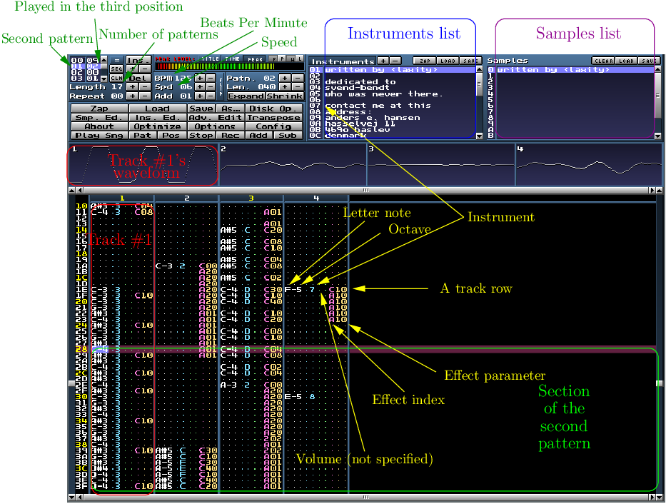

MilkyTracker a sound tracker (in other words, a music sequencer). It
represents music tracks as an arrangement of discrete musical notes
positioned in one of several channels, at discrete chronological positions
on a timeline.

2 A little bit of history about trackers
Sound trackers were born with the Commodore Amiga in 1985. The
Amiga mounted an audio coprocessor named Paula, which could be
“programmed” by sending a module through DMA producing something
similar to wavetable mixing. Paula can mix up to 4 sequences (tracks) of
signed linear-quantized 8-bit two’s complement PCM sound samples and
send the mixed sound to an stereo DAC.
In 1989, there are thousands of modules, such as electricity.
During the 1990s, tracker musicians gravitated from Amiga platforms to
the PC, which started to mount sound cards such as the Sound Blaster 16
and Gravis Ultrasound (GUS). For example, GUS cards can mix up to 32
channels of CD Quality (44.1 kHz/16 bit/Stereo).
In the following years, as CPUs got faster and acquired special multimedia
processing abilities (e.g. MMX), the responsibility for audio mixing passed
from hardware to software, which gradually enabled the use of more and
more channels (the “record” belong to Impulse Tracker which can handle
up to 64 channels).
MilkyTracker was created in mid-90s to emulate the popular Fasttracker
II DOS and the Amiga ProTracker 2/3 programs.
In 1998, amazing pieces such as squired have being created.
Still some musicians use this format to create their compositions. An
example: Pinochet Asesino.
3 What is a music module?
Basically, a module is a collection of tracks which store samples, notes,
volumes and effects, indicating how and when the samples are to be played.
More accurately, Music modules are a hybrid between the sequenced type
of music files like MIDI and wave files. Like MIDI files, modules contain
specifications about what instrument to play, at which pitch, using which
effects, and so on. However, they also include the actual samples to play.
The samples are usually short in time, one shot sounds (like bass drums,
snares) or samples (in fact, sequences of audio samples) that are can be
looped to emulate a sustaining note (like strings, leads).
4 How can I play a module in Linux?
Some options:
xmp: xmp is a module player for Unix-like systems that plays over 90
mainstream and obscure module formats from Amiga, Atari, Acorn, Apple
IIgs and PC, including Protracker (MOD), Scream Tracker 3 (S3M), Fast
Tracker II (XM) and Impulse Tracker (IT) files.
Audacious: An excelent audio player with a Jack interface.
5 Some more definitions
Pattern: A pattern is a group of simultaneously played tracks that
represents a full section of the song. Patters have a fixed number of rows
(typically 64) on which notes and effects can be placed (most trackers lay
out tracks in a vertical fashion) and may be repeated throughout a song.
Order: An order is part of any sequence of patterns which defines the
layout of a song. Patterns can be repeated across multiple orders to save
tracking time and file space.
Track: The section of a pattern which is sequenced in an independent DAC
channel, providing thus poliphony2 .
Tracks are like individual members of an orchestra, except that your
orchestra consists of little chunks of music rather (samples) than specific
instruments. Whereas the original Amiga trackers only provided four tracks
due to the hardware limits, modern trackers can mix a virtually unlimited
number of channels into one sound stream through software mixing.
Channel: Channel and track are synonymous. For example, MilkyTracker
can mix up to 32 channels, meaning 32 sounds can play simultaneously.
Instrument: A collection of one or more samples. Instruments are usually
classified into four categories: rhythm (such as a bass drum), bass (such as
a bass guitar), chords (such as a guitar) and leads (such as a piano). An
instrument is a single sample along with an optional indication of which
portion of the sample can be repeated to hold a sustained note.
Instrument Editor. Usually, when a new instrument is created, a sample
is liked to it. In most trackers there is a panel to edit/add envelop, control
the global volume, fading, panning, etc.
Sample: A sample is a small digital sound file of an instrument, voice, or
other kind of sound. When very short samples are used (in order to reduce
as much as possible the size of the module file), the module usually is
called a chip tune and chip music is produced.
Sample Editor. It is very similar to Instrument Editor. This is where you
put your audio file such as WAV.
Note: A note designates the frequency at which the sample is played back.
By increasing or decreasing the playback speed of a digital sample, the
pitch is raised or lowered, simulating instrumental notes (e.g. C, C#, D,
etc.).
Tempo: Controls the speed of the playback and usually is measured in
BPM (Beats Per Minute).
Effect: An effect is a special function applied to a particular note. Common
tracker effects include volume, portamento, vibrato, retrigger, tremolo and
arpeggio.
Portamento: Pitch sliding from one note to another.
Vibrato: Regular and pulsating change of pitch of a note.
Retrigger: When a sample is replayed a set number of times within a
certain timeframe.
Tremolo: The endure of a note produced either by rapid reiteration of
a note, by rapid repeated slight variation in the pitch of a note, or by
sounding two notes of slightly different pitches to produce prominent
overtones.
Arpegio: When notes in a chord are played or sung in sequence, one after
the other, rather than ringing out simultaneously.
Panning: Is the control of the balance of a stereo or multichannel signal.
Echo: Is the recursive playback of a sound slightly delayed and usually
attenuated.
Fading: A gradual increase or decrease in the level of the sample.
6 Getting samples
There are several alternatives:
Recording: You can create your own samples by playing an
instrument like a guitar or a piano and recording (sampling) it.
Copying: You could also extract sample sounds from a keyboard or
a synthesizer, o even better, download them from Internet sites such
as http://freewavesamples.com/.
Generating samples: Another way to get samples is to generate
them using a tool. This is actually done a lot for chip tunes because
you can make some very small samples using this technique. Milky
Tracker has some great options to facilitate this. For example, you can
use basic shapes wave shapes as samples, or alter them by using the
Draw function of Milky Tracker. It’s also possible to draw a sample
from scratch.
http://www.exotica.org.uk/wiki/Main_Page: An Amiga and retro
gaming/computer music interest wiki including search-able computer
music collections, game and demo scene information.
Demodulate: are sites with demos and module music.
Chiptune3 :
An online community in respect and relation to chip music, art and
its parallels.
WORLD OF GAME MODS: A collection of game music modules for
all platforms.
Nectarine Demoscene Radio: Not downloads avaiable. A live module-based
radio operated by request of the registered users. Use, for example
vlc http://nectarine.from-de.com/necta192
to play it (however, notice that the stream in MP3, not a module!).
Mazemod Radio: A web radio dedicated to Amiga & tracker music culture
streaming various styles of computer electronic music from the demoscene
& computer art subculture.
8 Taxonomy of a track row (revisited)
Letter Note - Octave - Instrument (or Sample if no Instrument) - Volume
- Effect Name - Effect Number.
9 About keyboards
Most trackers support MIDI keyboards that allow to enter notes and
volumes, easily.
Most trackers provide a graphical facility with a keyboard that can be
controlled with the mouse.
Finally, most trackers maps the notes as follows: Q, A and Z is C note;
W, S & X is C#, and so on.
Now enter the same patters but using four channels (each row in a different
track, cyclically). Do you think that using only one track, Milky Tracker
provides poliphony?